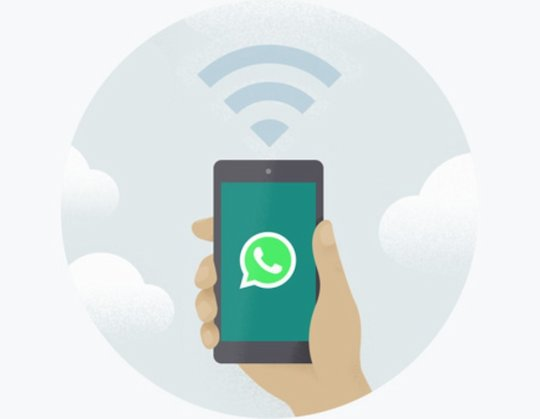

<div class="lobbyScreen" aria-grabbed="false">
  

  <h2>Keep your phone connected</h2>
  <span> WhatsApp connects to your <del>phone</del> to sync messages.</span>
  <span>To reduce data usage, connect your <del>phone</del> to wi-fi.</span>
</div>
